F5 Identity and Access Management Solutions > 200 Series: Assisted Deployment Use Cases Source | Edit on
Lab 3: Utilize HTTP Connector(15.1)¶
HTTP Connector is a new feature released in BIG-IP APM 15.1 that allows HTTP requests to be initiated from a Per-Request Policy. This could be used to send a request to an API to retrieve additional information to make an access control decision, or send information to update an external resource.
Section 3.1 - Create the HTTP Connector Request¶
The HTTP Connector is made up of two parts. The first part is called the HTTP Connector Transport and it defines settings related to SSL, DNS, timeouts, and payload sizes. The second part is the HTTP Connector Request which contains specific details such as HTTP Method, URL, message body, and how to handle the HTTP responses.
Task 1 - Create a DNS Resolver¶
Return to the BIG-IP GUI
Navigate to Network >> DNS Resolvers >> DNS Resolver List. Click the + (Plus symbol) Symbol

Enter Name internal_resolver and click Finished
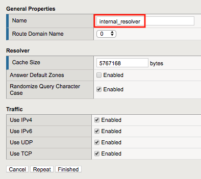
Click internal_resolver
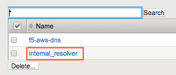
Click the Forward Zones tab
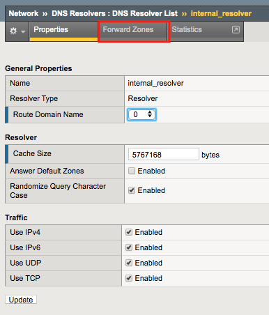
Click Add
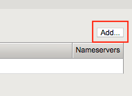
Enter . (a Single dot) in the Name field
Add a Nameserver by entering Address 10.1.20.7 and click Add
Click Finished
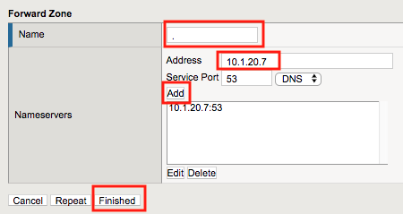
Task 2 - Create a ServerSide SSL Profile¶
Navigate to Local Traffic >> Profiles >> SSL >> Server. Click the + (Plus Symbol) Symbol
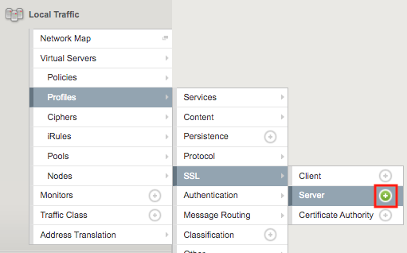
Enter Name adapi.f5lab.local
Check Custom box to the right of the Certificate and Key fields to make them editable.
Select apiadmin.crt from the Certificate dropdown
Select apiadmin.key from the key dropdown
Click Finished at the Bottom of the page
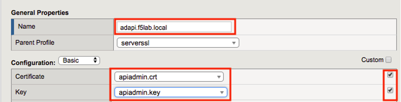
Task 3 - Create a HTTP Connector Transport¶
Navigate to Access >> Authentication >> HTTP Connector >> HTTP Connector Transport Click the + (Plus Symbol)
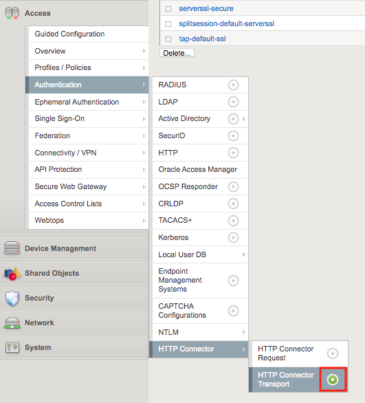
Enter the name demo-http-connector
Select internal_resolver from the DNS Resolver dropdown
Select adapi.f5lab.local from the Server SSL Profile
Click Save
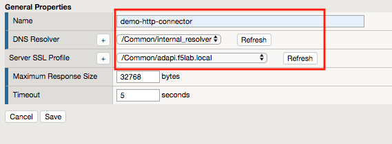
Task 4 - Create a HTTP Connector Request¶
Navigate to Access >> Authentication >> HTTP Connector >> HTTP Connector Request. Click the + (Plus Symbol)
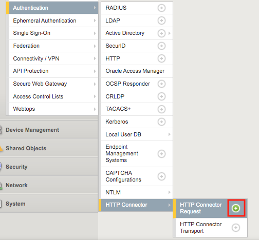
Enter name get-aduser-attributes
Select demo-http-connector from the dropdown
Enter URL https://adapi.f5lab.local:8443/user?username=%{perflow.username}
Enter GET for the Method
Select Parse for the Response Action
Click Save
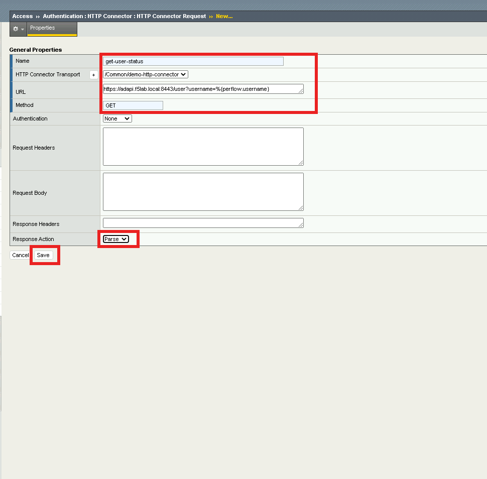
Section 3.2 - Add HTTP Connector to the IAP Policy¶
Now that the HTTP Connector Request has been defined you will add it to basic.acme.com application and test.
Task 1 - Add the HTTP Connector Request¶
From the web browser, click on the Access tab located on the left side.

Click Guided Configuration
Click IAP_DEMO
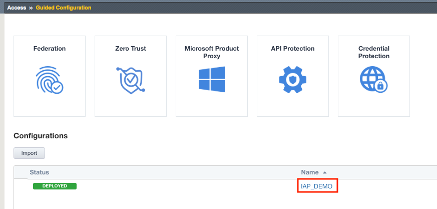
Click on Contextual Access
Click on basic.acme.com
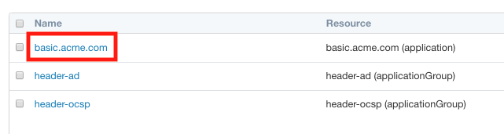
Click Add under Trigger Rules
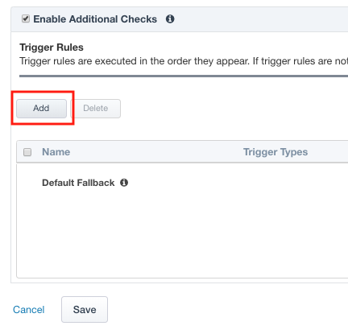
Enter Name get-user-status
Check HTTP Connector Request
Select get-aduser-attributes from the HTTP Connector Request dropdown
Under Value (Success Expression) enter expr {[mcget {subsession.http_connector.body.userAccountControl}] == 66048 }
Select Step Up from the Match Action dropdown
Select Custom Radius based Authentication (MFA) from the Step Up Authentication field
Click Save
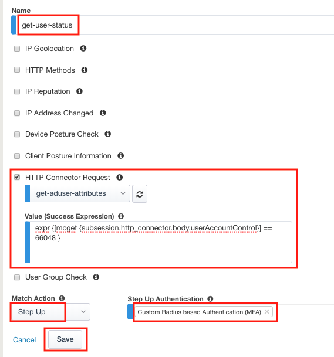
Change the Match Action field for the Default Fallback rule to Reject
Click Save
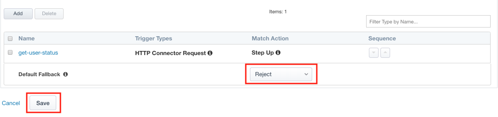
Click Deploy. Deployment will take a few moments.
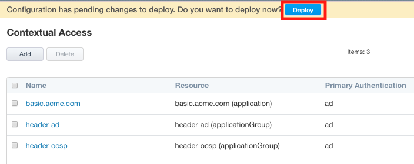
{kind=link}
Section 3.3 - Testing¶
In this section you will test how HTTP connector can influence policy changes dynamically as conditions change in the network .
Task 1 - Access basic.acme.com¶
From the jump box open Chrome and open Developer Tools
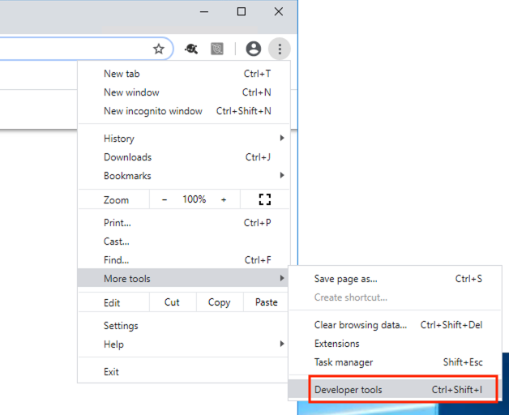
Ensure Disable Cache is checked
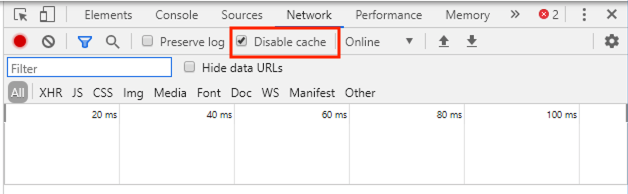
Access the site https://basic.acme.com
Login with the Username: user2 and Password: user2
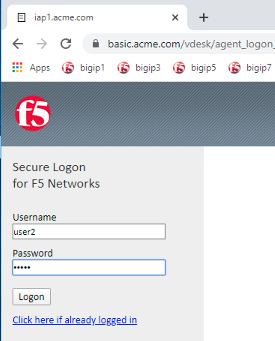
Enter the PIN 123456 for RADIUS authentication
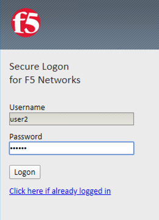
You will be presented the website
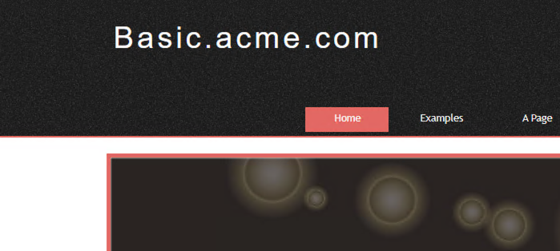
From a separate browser tab access the BIG-IP management interface https://bigip1.f5lab.local
Navigate to Access >> Overview >> Active Sessions
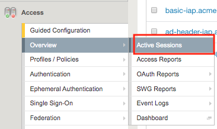
You will see an active session for user2.
Expand the session to see all the sub-sessions by clicking the + (Plus symbol) to the left of the session ID.
Note
Your session ID will not match the one displayed in the screenshot below.
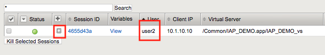
Click View to the right of the HTTP Connector request get-user-status to see the sub-session variables.
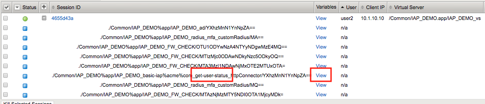
You will notice that HTTP Connector received multiple values back in the response and each JSON key was parsed to individual subsession variables.
userAccountControl is currently set to 66048. Which mean the account is enabled and the password never expires.
Click Cancel
Expand the session to see all the sub-sessions by clicking the + (Plus Symbol) to the left of the session ID.
Note
You session ID will not match the one displayed in the screenshot below.
If the HTTP Connector sub-session still exists check off that specific sub-session only and click Kill Selected Sessions
Note
You are doing this to speed up the process and bypass the typical timers associated with HTTP Connector. This will enable you to see HTTP Connector trigger immediately on the next HTTP request sent from the jumphost.
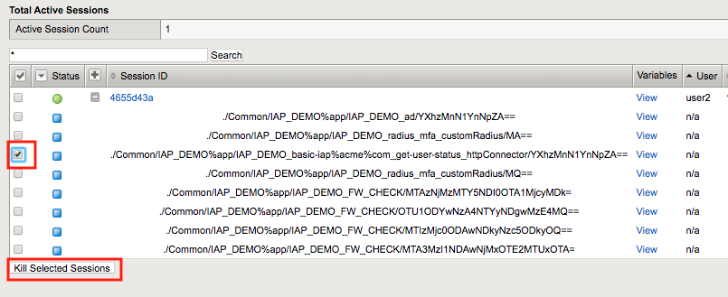
Locate the DisableUser2.ps1 Powershell script located on the desktop.
Right click the script and select Run with PowerShell. A Powershell window will appear displaying User2 account is Disabled.
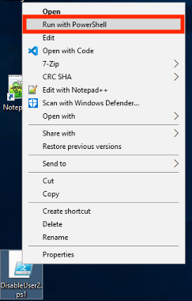
Return to your existing https://basic.acme.com session.
Click on one of the links for the website. You will receive a Deny Page.
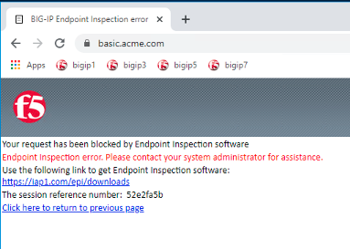
If you return to the sub-session variables screen in BIG-IP you will see UserAccountControl was 66050.
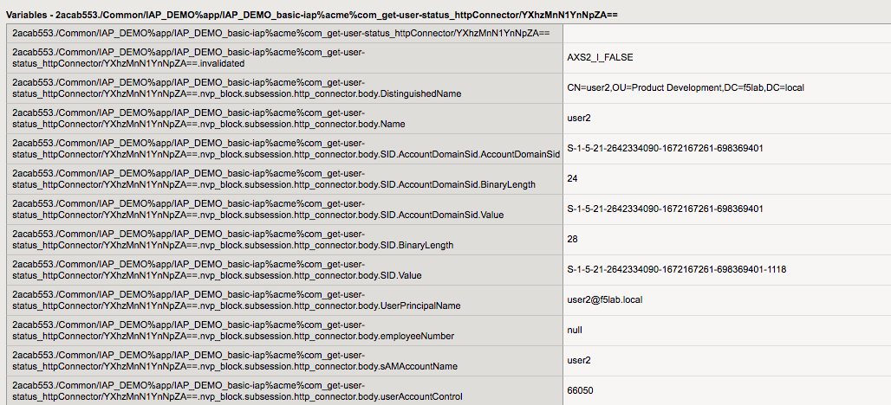
This concludes lab 3.

{kind=link}